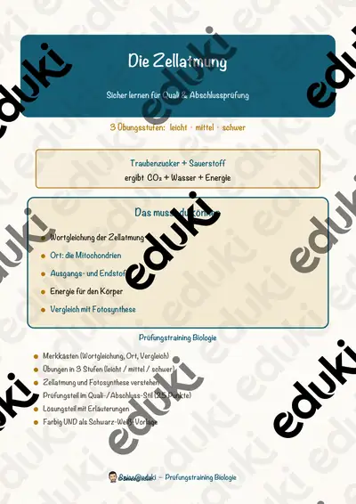

Zelle, Mikroskop und Bakterien: Arbeitsblätter für Klasse 5–9 (Biologie)
Mikroskopieren ist ein Wendepunkt der Biologie: Lebewesen bestehen aus Zellen. Die Lernenden lernen Aufbau, Bakterien und Viren kennen.
Als roter Faden eignen sich Zellkern, Zellmembran und Mikroskop; Bakterien, Viren und Impfung lassen sich je nach Klassenstufe zuschalten.
Im Fach Biologie gehört das Thema nach den Lehrplänen der Länder zum festen Programm, überwiegend in der Sekundarstufe I (Klasse 5–9). Die Jugendlichen mikroskopieren und beschreiben Zellen und deren Bestandteile.
Ob Vertretungsstunde, Stationenarbeit oder Hausaufgabe: Die Arbeitsblätter zu Zelle, Mikroskop und Bakterien lassen sich flexibel einsetzen, etwa mit Zellkern als Auftakt und Impfung als Abschluss. Musterlösungen sparen die Korrekturzeit. Zur Differenzierung eignen sich die Lesespurgeschichten mit ihren drei Niveaustufen.
Zum Thema finden Sie 10 Materialien, unter anderem Der Zellkern, Das Mikroskop und Die Zellatmung, verteilt auf 3 Lesespurgeschichten, 1 Prüfungstraining und 5 Lückentexte mit Hörverstehen in Klasse 5–9. Zwiebelhaut unter dem Mikroskop ist der einfachste Einstieg in die Zellbiologie.
Das gehört zum Thema
Passende Arbeitsblätter und Materialpakete

Der Zellkern – Lesespurgeschichte mit Rätselaufgaben (Klasse 9)

Das Mikroskop – Lesespurgeschichte mit Rätselaufgaben (Klasse 8)

Die Bakterien – Lesespurgeschichte mit Rätselaufgaben (Klasse 8)

Die Zellatmung – Prüfungstraining Biologie (Klasse 9)

Virus Lückentext mit Wortspeicher Hörverstehen und Suchsel

Zelle Lückentext mit Wortspeicher Hörverstehen und Suchsel

Impfung Lückentext mit Wortspeicher Hörverstehen und Suchsel

Mikroskop Lückentext mit Wortspeicher Hörverstehen und Suchsel

Bakterien Lückentext mit Wortspeicher Hörverstehen und Suchsel

Warum werden Bakterien gegen Antibiotika resistent? - Homeschooling
Häufige Fragen
Für welche Klassenstufe passen die Arbeitsblätter zu Zelle, Mikroskop und Bakterien?
Passend sind Klasse 5–9. Von den 10 Titeln wenden sich die meisten an Klasse 6, einige lassen sich differenzierend auch in benachbarten Stufen nutzen.
Welche Inhalte decken die Materialien zu Zelle, Mikroskop und Bakterien ab?
Inhaltlich reicht die Auswahl von Zellkern über Zellmembran und Mikroskop bis zu Viren; Details stehen bei den einzelnen Materialien.
Wie setze ich Zelle, Mikroskop und Bakterien im Unterricht ein?
Zwiebelhaut unter dem Mikroskop ist der einfachste Einstieg in die Zellbiologie. Danach genügt meist ein Material als Einstieg und eines zum Üben.
Mehr Material nach Fach und Klasse
- Alle Materialien Biologie
- Arbeitsblätter Biologie Klasse 5
- Arbeitsblätter Biologie Klasse 6
- Arbeitsblätter Biologie Klasse 7
- Arbeitsblätter Biologie Klasse 8
- Arbeitsblätter Biologie Klasse 9
- Unterrichtsmaterial Klasse 5
- Unterrichtsmaterial Klasse 6
- Unterrichtsmaterial Klasse 7
- Unterrichtsmaterial Klasse 8
- Unterrichtsmaterial Klasse 9
Verwandte Lehrplanthemen
- Atmung, Verdauung und Organe (Biologie, Klasse 5–9)
- Fische und Meerestiere (Biologie, Klasse 4–8)
- Fotosynthese (Biologie, Klasse 5–9)
- Herz und Blutkreislauf (Biologie, Klasse 5–9)
- Ökosysteme und Nahrungsnetze (Biologie, Klasse 5–9)